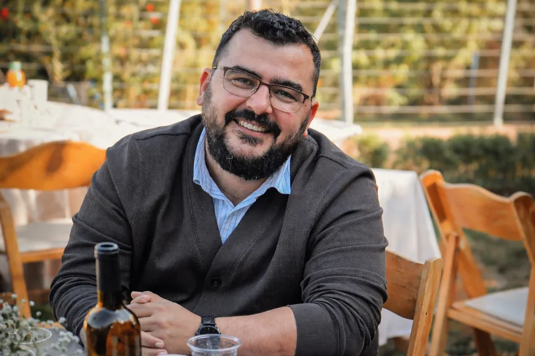

שמי יניב אלוש, ואני נרגש לשתף אתכם קצת עליי. אני נשוי לאהובתי תאיר, ואבא גאה לשמונה ילדים מדהימים. כבר 14 שנים אני מנהל תפעול בתעשיית החקלאות בארץ ובעולם. בנוסף, אני פעיל חברתי בעוטף עזה, שם הקמתי את מיזם "צוות עכביש" לחיזוק החוסן הקהילתי.
מיזם נוסף שהקמתי ושאני מאוד אוהב הוא הפודקאסט "הנגשמה", שבו אני לומד יחד עם אנשים מרחבי העולם ספרי הגות יהודית.
איך נולד הנגשמה
כל בוקר אני נוסע נסיעה ארוכה לעבודה, הלוך ושוב. לפני מספר שנים חיפשתי פודקאסט של מישהו שמקריא ספר הגות יהודית ומסביר אותו קצת, כך שאחרי כמה נסיעות "מסיימים" ספר שלם, וזוכים לנצל את זמן הנסיעות בלימוד תורה.
כשראיתי שאין פודקאסט כזה, החלטתי לבנות אותו בעצמי. את ימי הקורונה ניצלתי כדי להקים את הפרויקט. התחלנו בספר מסילת ישרים, ובעזרת ה' הפודקאסט גדל לספרים נוספים: התניא, דרך ה', חובת הלבבות, נפש החיים ועוד.
בשנים האחרונות יש לפודקאסט מאזינים לא רק בישראל, אלא בכל העולם. אני מתרגש ושמח מאוד בכל פעם שמגיעה הודעה ממאזין או מאזינה שזכו בזכות המיזם לסיים ספר שמעולם לא הצליחו להשלים, או ללמוד פרק במקום מיוחד שבו שהו.
הספרים
בשנים האחרונות אני זוכה לכתוב וליצור ברשתות החברתיות על חוויותיי מהעבר ומההווה. אחרי השביעי באוקטובר פונתה משפחתי למלון בהרי ירושלים, ושם זכיתי לקבץ ולערוך את ספרי הראשון, "גולני חפ"ש": אוסף של סיפורים קצרים המוארים דרך פרשת השבוע. סיפורים מהשירות הצבאי כלוחם בגולני, סיפורי ילדות ונערות של שנות השמונים והתשעים, וסוגיות בניהול.
בתחילת 2026 סיימתי לכתוב ולערוך את ספרי השני, "הכול משתבש לפי התכניות": אסופת שירים שמתארת מסע אישי. תובנות ממשבר אמצע החיים, זוגיות, הורות, והצעידה היומיומית בין קודש לחול.
בעוטף
אחרי שחזרנו לעוטף ולמושב שוקדה, חידשתי את צוות עכביש, וזכיתי להרחיב את המיזם ליישובים נוספים בדרום: צוות מתנדבים מתוך הקהילה שמסייע בהקמת אירועי שמחה, עם ציוד ויכולות שמשדרגים כל אירוע לרמה מקצועית.
אני אוהב מאוד את המסורת שלנו ומחובר לתורה שלנו, ורוצה להיות בורג קטן שמסייע במסע האישי של כל אדם במציאת הדרך שלו לעבודת ה'.